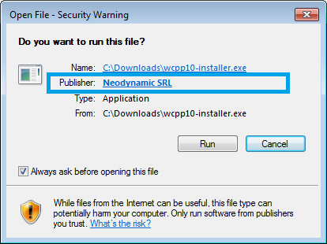
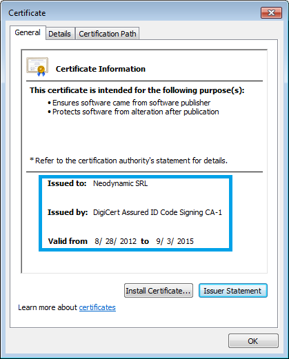

WebClientPrint for PHP
About WebClientPrint for PHP
WebClientPrint for PHP is a lightweight and plugin-free solution for Client-side Raw Data Printing scenarios for Windows, Linux & Mac clients, exclusively designed for PHP projects. With our WebClientPrint solution, you can easily send raw data, text and native commands to printers installed at the client machine without showing or displaying any print dialog box!
Features at a Glance
- Server-side Technology
- WebClientPrint classes written entirely in PHP
- Requires PHP 5.3 or greater
- Renders pure HTML/Javascript solution using jQuery framework
- Plug-in free approach! No ActiveX, No Flash, No Silverlight, No Java
- Client-side Technology
- WCPP Utility (a native app for Windows, Linux & Mac without any dependencies!) Simple, small and easy one-time install!
No ActiveX, No Flash, No Silverlight, No Java, No .NET Framework - Cross Browser (supporting old and modern versions of main brands) Internet Explorer, Mozilla Firefox, Google Chrome, Opera, Safari
- Cross Platform support! Windows 98, 2000, ME, XP, Vista, Windows 7 or Windows 8.x (Desktop-mode); Debian & Red Hat-based distros with GNOME-based Desktop: Debian 6 or greater, Ubuntu 10.04 or greater, Linux Mint 7 or greater, Fedora 11 or greater, CentOS 5.3 or greater; Mac (Intel): OS X 10.5 (Leopard) or greater
- WCPP Utility (a native app for Windows, Linux & Mac without any dependencies!) Simple, small and easy one-time install!
- Client-side Printers Support
- WebClientPrint does support any kind of type and brand printers! Thermal Label Barcode printers, POS receipt printers, RFID printers, Dot-Matrix printers, Kiosk printers, ID Card printers, Laser, Inkjet and more...
- Client Printers Connectivity support: installed Windows printers (for USB connection), Shared Printers on the client machine network with a UNC name/path, printers connected to Parallel Port (e.g. LPT1) Centronics or Serial Port RS-232 (e.g. COM1) as well as IP/Ethernet Network printers.
- Send any Printer Command Language! Most known like ESC/P, PCL, PostScript, ZPL, EPL, IPL, DPL, EZPL, ZGL, SBPL, RCL WPL, CLP, IBM Proprinter, CPL, Dymo ESC codes, SPL, TCPL, TSPL-EZ, DASCOM
- Installation and Deployment
- Easy-to-install
- Simple Xcopy deployment
Using WebClientPrint in your PHP Dev Tool
WebClientPrint can be used with any development tool (IDE) that provides support for PHP 5.3 (or greater) projects.
Referencing the WebClientPrint component
To use the WebClientPrint server-side component in your PHP project, you must copy the WebClientPrint.php file to your PHP website project root folder. In addition, you must create the wcpcache folder and give it file write permission. Please take a look at the sample project for further details.
The WebClientPrint server component
In this section
- Overview
- Client Print Jobs
- Creating Client Print Jobs
- Client Printer Types
- Printer Commands
- Printing Common File Formats
- Sending the ClientPrintJob to the client
- WebClientPrint Scripting
- How to detect if WCPP is installed at the client machine
Overview
The WebClientPrint is a client-server solution. The server-side component is a set of classes contained in a unique file called WebClientPrint.php which is used in your PHP website to generate "Client Print Jobs".
A Client Print Job allows you to specify:
- What client printer to use, for example:
- Use "the Default printer" of the client machine. Printing will be performed without displaying any dialog!
- Use "a specific installed printerâs name" on the client machine. Printing will be performed without displaying any dialog! This also applies for Shared Printers on the client machine network with a UNC name/path!
- Display a "printer dialog" to let the user to select the printer
- Explicitly specify the client printer settings for parallel (LPT) Centronics or serial RS-232 ports or IP/Ethernet Network printers.
- And the commands or file you want to print or send to the client printer.
The WebClientPrint server component requires:
Client Print Jobs
A Client Print Job (CPJ) contains info about the print job to be processed at the client side by the WCPP utility. The info includes the type of printer to be used and that is available at the client side as well as the data, text or raw commands you want to send or print to such printer.
Creating Client Print Jobs
A CPJ is specified by creating an instance of the Neodynamic\SDK\Web\ClientPrintJob class. The target printer is specified through the $clientPrinter property and the data, text or raw commands are specified through the $printerCommands property. That's it! The Client Printer Types and Printer Commands topics provide details and sample code of those main properties.
Client Printer Types
The Client Printer is specified through the $clientPrinter property and it accepts an object that should be an instance of any of the following ClientPrint-derived classes:
- DefaultPrinter
- UserSelectedPrinter
- InstalledPrinter
- ParallelPortPrinter
- SerialPortPrinter
- NetworkPrinter
Read on to see how to create CPJ for each of the supported client printer types.
DefaultPrinter
The Neodynamic\SDK\Web\DefaultPrinter allows you to print to the client's printer which is set up as the "default printer". The printing is performed without displaying any dialog to the user. Here is a snippet code of how to use this option:
include 'WebClientPrint.php'; use Neodynamic\SDK\Web\ClientPrintJob; use Neodynamic\SDK\Web\DefaultPrinter; //... //Create a ClientPrintJob obj that will be processed at the client side by the WCPP $cpj = new ClientPrintJob(); $cpj->clientPrinter = new DefaultPrinter(); $cpj->printerCommands = 'PRINTER_COMMANDS_GO_HERE'; //...
UserSelectedPrinter
The Neodynamic\SDK\Web\UserSelectedPrinter allows you to let the user to dynamically select which printer he/she wants to use by displaying a Print Dialog box. That print dialog will list all the installed printers in the user's machine. Here is a snippet code of how to use this option:
include 'WebClientPrint.php'; use Neodynamic\SDK\Web\ClientPrintJob; use Neodynamic\SDK\Web\UserSelectedPrinter; //... //Create a ClientPrintJob obj that will be processed at the client side by the WCPP $cpj = new ClientPrintJob(); $cpj->clientPrinter = new UserSelectedPrinter(); //let the user to select the printer by a print dialog box $cpj->printerCommands = 'PRINTER_COMMANDS_GO_HERE'; //...
InstalledPrinter
The Neodynamic\SDK\Web\InstalledPrinter allows you to specify the "Printer Name" of an installed printer at the client machine. By "installed" it means, a printer which is listed in the Printers section of Windows, Linux or Mac OS. Those printers are generally installed by using a driver provided by the manufacturer.
For Raw printing, installing the "Generic / Text Only" driver that comes with Windows OS (and similar driver on Linux & Mac OS) is sufficient in many cases. The "Generic / Text Only" driver is also useful when you cannot get the original driver from the manufacturer because it does not support a given version of Windows or the printer is too old, etc.
So, suppose the user has a printer installed which name is "MyLocalPrinter". Here is a snippet code of how to use this option:
include 'WebClientPrint.php';
use Neodynamic\SDK\Web\ClientPrintJob;
use Neodynamic\SDK\Web\InstalledPrinter;
//...
//Create a ClientPrintJob obj that will be processed at the client side by the WCPP
$cpj = new ClientPrintJob();
$cpj->clientPrinter = new InstalledPrinter('MyLocalPrinter'); //set the installed printer's name on the client machine
$cpj->printerCommands = 'PRINTER_COMMANDS_GO_HERE';
//...
Special case for Shared Network printers
When the user has an installed printer which is a Shared Network Printer (i.e. a printer attached to another computer on the network), then you can use the InstalledPrinter option to specify such kind of printer. The correct way to specify the printer's name in these cases is by using the UNC (Universal Naming Convention) name/path to reach the printer.
So, suppose the user has a network printer installed which UNC path is "\\anotherPC\CoolBrandPrinter". Here is a snippet code of how to use this option:
include 'WebClientPrint.php';
use Neodynamic\SDK\Web\ClientPrintJob;
use Neodynamic\SDK\Web\InstalledPrinter;
//...
//Create a ClientPrintJob obj that will be processed at the client side by the WCPP
$cpj = new ClientPrintJob();
$cpj->clientPrinter = new InstalledPrinter('\\anotherPC\CoolBrandPrinter'); //set the installed network printer's UNC path/name
$cpj->printerCommands = 'PRINTER_COMMANDS_GO_HERE';
//...
ParallelPortPrinter
The Neodynamic\SDK\Web\ParallelPortPrinter allows you to specify the parallel port (LPT) of the client machine that the printer is connected to. The client does not need to install the printer through Windows OS. However, a valid LPT port needs to be available and the printer connected to such port through a Centronics interface.
For Linux & Mac OS, Parallel Port printers must be installed through CUPS and then set the assigned printer name through the InstalledPrinter option.
Here is a snippet code of how to use this option:
include 'WebClientPrint.php';
use Neodynamic\SDK\Web\ClientPrintJob;
use Neodynamic\SDK\Web\ParallelPortPrinter;
//...
//Create a ClientPrintJob obj that will be processed at the client side by the WCPP
$cpj = new ClientPrintJob();
$cpj->clientPrinter = new ParallelPortPrinter('LPT1'); //use the printer available at LPT1 port on the client machine
$cpj->printerCommands = 'PRINTER_COMMANDS_GO_HERE';
//...
SerialPortPrinter
The Neodynamic\SDK\Web\SerialPortPrinter allows you to specify the serial port (RS-232) settings of the client printer. The client does not need to install the printer through Windows OS. However, a valid serial port needs to be available and the printer connected to such port. Please refer to the client's printer manual for details about the serial port settings.
For Linux & Mac OS, Serial RS232 Port printers must be installed through CUPS and then set the assigned printer name through the InstalledPrinter option.
Here is a snippet code of how to use this option:
include 'WebClientPrint.php';
use Neodynamic\SDK\Web\ClientPrintJob;
use Neodynamic\SDK\Web\SerialPortPrinter;
use Neodynamic\SDK\Web\SerialPortHandshake;
use Neodynamic\SDK\Web\SerialPortParity;
use Neodynamic\SDK\Web\SerialPortStopBits;
//...
//Create a ClientPrintJob obj that will be processed at the client side by the WCPP
$cpj = new ClientPrintJob();
//use the printer available at COM1 port and these settings
//NOTE: Refer to the printer manual for details
$cpj->clientPrinter = new SerialPortPrinter('COM1', 9600, SerialPortParity::NONE, SerialPortStopBits::ONE, 8, SerialPortHandshake::XON_XOFF);
$cpj->printerCommands = 'PRINTER_COMMANDS_GO_HERE';
//...
NetworkPrinter
The Neodynamic\SDK\Web\NetworkPrinter allows you to specify a TCP/IP Ethernet-enabled printer that can be reached from the client machine. The client printer in this case can be specified by using the IP address or DNS name as well as the port number.
For Linux & Mac OS, IP/Ethernet printers should be installed through CUPS and then set the assigned printer name through the InstalledPrinter option.
Here is a snippet code of how to use this option:
include 'WebClientPrint.php';
use Neodynamic\SDK\Web\ClientPrintJob;
use Neodynamic\SDK\Web\NetworkPrinter;
//...
//Create a ClientPrintJob obj that will be processed at the client side by the WCPP
$cpj = new ClientPrintJob();
$cpj->clientPrinter = new NetworkPrinter('10.0.0.8', 9100); //set the printer's IP address and port number
$cpj->printerCommands = 'PRINTER_COMMANDS_GO_HERE';
//...
Printer Commands
The printer commands you want to send to the client printer is specified through the $printerCommands property of the Neodynamic\SDK\Web\ClientPrintJob class. The $printerCommands property accepts a String type.
String Format for Printer Commands
As stated before, the $printerCommands property accepts a String type for the commands you want to send to the client printer through a Neodynamic\SDK\Web\ClientPrintJob object.
Some Printer Command/Programming Languages feature non-printable or non-human-readable characters in their syntax. Common samples are the ESC/P language which uses ASCII Dec 27 (ESC), ASCII Dec 10 (LF), ASCII Dec 13 (CR), etc; thermal printer languages like Zebra ZPL which sometimes needs to specify ASCII Dec 29 (GS), ASCII Dec 30 (RS), ASCII Dec 4 (EOT), etc.
These non-printable chars could require many string concatenations. To avoid such situation and to provide a better readability of your printer commands, WebClientPrint allows you to format any character by expressing it in Hexadecimal notation within the string commands.
For example, suppose you need to send ESC/P codes for "Set page length in inches" which syntax is as follows: [ESC] C [NUL] n
Where:
- [ESC]: is ASCII Hex 1B
- C: is ASCII Hex 43
- [NUL]: is ASCII 00
- n: is a number in the range 1 < n < 22
Then to specify this command as a string and using the VB or C# Hexadecimal notation:
//set the commands to send to the printer $cpj->printerCommands = '0x1B C 0x00 5'; //enable Hex notation for commands $cpj->formatHexValues = true;
Printing Common File Formats
In addition to print native commands, you can also use WebClientPrint solution to send and print common file formats like PDF, TXT, DOC, XLS, JPG, PNG, TIFF (Multipage), etc.
The Print File feature has the following requirements:| Windows Clients | Linux & Mac Clients | |
| DOC, DOCX | Microsoft Word is required | LibreOffice is required |
| XLS, XLSX | Microsoft Excel is required | LibreOffice is required |
| Adobe Acrobat or Foxit Reader is required | Natively supported! | |
| TXT | Notepad is required | Natively supported! |
| JPEG | Natively supported! | Natively supported! |
| PNG | Natively supported! | Natively supported! |
| BMP | Natively supported! | Natively supported! |
| Printer Support | You can print files to local installed printers ONLY! Parallel, Serial and IP/Ethernet printers are NOT supported. | You can print files to any installed printers through CUPS system. |
The file you want to send to the client printer is specified through the $printFile property of the Neodynamic\SDK\Web\ClientPrintJob class. The $printFile property accepts an instance of the Neodynamic\SDK\Web\PrintFile class.
The following snipped shows how to set up and print a PDF file that is located in a PHP website folder:
//temp file name that will be created at the client machine
$tempFileName = uniqid().'.pdf';
//Create a PrintFile object
$fileToPrint = new PrintFile('files/LoremIpsum.pdf', $tempFileName, NULL);
//Create a ClientPrintJob and set the PrintFile
$cpj = new ClientPrintJob();
$cpj->printFile = $fileToPrint;
The demo sample projects shipped with the installer package has a complete code for testing this feature.
Printing multiple files is possible too!
In addition to printing a single file, you can send to the client printer multiple files! For example, you could want to print a PDF file, plus an image file. Or multiple Word docs plus other Excel sheets!
The files you want to send to the client printer are specified through the $printFileGroup property of the Neodynamic\SDK\Web\ClientPrintJob class. The $printFileGroup property is an array of Neodynamic\SDK\Web\PrintFile objects.
The following snipped shows how to set up and print a PDF file plus a Word (DOC) file that are located in a PHP website folder:
//...
//Create array of PrintFile objects you want to print
$fileGroup = array(
new PrintFile('files/PaymentInstructions.pdf', 'PaymentInstructions.pdf', NULL),
new PrintFile('files/Invoice.doc', 'Invoice.doc', NULL)
//Create a ClientPrintJob and set the PrintFile objects
$cpj = new ClientPrintJob();
//set files to print
$cpj->printFileGroup = $fileGroup;
/...
);
Sending the ClientPrintJob to the client
After you create a Neodynamic\SDK\Web\ClientPrintJob object, set its main properties like the target $clientPrinter and the $printerCommands or $printFile you want to print; then the final step is to send the ClientPrintJob to the client machine from PHP. To do this, you just invoke the sendToClient function of the Neodynamic\SDK\Web\ClientPrintJob class. Here is a snippet of how you should do this:
//Send ClientPrintJob back to the client so it can be processed by the WCPP echo $cpj->sendToClient();
WebClientPrint Scripting
The Neodynamic\SDK\Web\WebClientPrint server component allows you create Neodynamic\SDK\Web\ClientPrintJob objects that are sent to the client machine where the WCPP utility will process them. To launch the WCPP installed at the client machine, you need to add some script code to your web page. The Neodynamic\SDK\Web\WebClientPrint class provides you with all the needed to perform this task without efforts at all.
Registering the WebClientPrint Script
The first step before scripting to Neodynamic\SDK\Web\WebClientPrint is to add a simple line of code in the PHP markup code of your web page. This must be done once in your page so you can use the jsWebClientPrint (a javascript object) later on. The page is the one from where the user will perform the printing action e.g. through a button, hyperlink, script function, etc.
So, open the PHP page and add the following line of code inside the HTML <body>:
Remember to add a link to jQuery 1.4.1 or greater in the page where you are going to use WebClientPrint script code.
<?php //Specify the ABSOLUTE URL to the php file that will create the ClientPrintJob object //Suppose GenPrintJOb.php is a file that creates a ClientPrintJob object echo WebClientPrint::createScript(Utils::getRoot().'/GenPrintJob.php') ?>
Printing by using jsWebClientPrint
jsWebClientPrint is the javascript object that you will use to launch the WCPP utility at the client machine. Before trying to use it, you must ensure you have done what is stated in the "Registering the WebClientPrint Script" topic.
The jsWebClientPrint object features a print() method that you can invoke from HTML or javascript code. The print() method is the one which invokes the WCPP utility at the client machine so it can process the ClientPrintJob generated from your PHP website.
You can pass to the print() method any number of useful data/parameters that you might need to analyze in the method of your server class that generates the ClientPrintJob objects. In our sample code demos, we usually pass to the print() method the user's Session ID that we use then to determine what kind of ClientPrintJob needs to be generated. So, in our sample code demos, you will find a javascript code that looks like the following:
<a href="#" onclick="jsWebClientPrint.print('sid=<?php echo session_id(); ?>');">Print...</a>
Get Installed Printers
jsWebClientPrint allows you to get the list of installed printers available at the client machine by using the getPrinters() function. By "installed printers" it means the printers that are listed and installed under the client OS (Windows, Linux or Mac).
Here's a simple code about how to use this feature. The code has an HTML button that when clicked, it invokes the getPrinters() function. There's also an HTML select element that will be filled with the installed printers if the code on getting the printers successes.
<input type="button" value="Load Installed Printers..." onclick="javascript:jsWebClientPrint.getPrinters();" /> <br /> <select id="installedPrintersList"></select>
<script type="text/javascript">
var wcppGetPrintersDelay_ms = 5000; //5 sec
function wcpGetPrintersOnSuccess(){
// Display client installed printers
if(arguments[0].length > 0){
var p=arguments[0].split("|");
var options = '';
for (var i = 0; i < p.length; i++) {
options += '<option>' + p[i] + '</option>';
}
$('#installedPrintersList').html(options);
$('#installedPrintersList').focus();
}else{
alert("No printers are installed in your system.");
}
}
function wcpGetPrintersOnFailure() {
// Do something if printers cannot be got from the client
alert("No printers are installed in your system.");
}
</script>
The variable named as wcppGetPrintersDelay_ms holds how much time (in milliseconds) the script code needs to wait for the installed printers list sent by WCPP from the client side. In the sample code above, we set it to 5000 ms (i.e. 5 seconds) but you can change it to whatever you want.
Commanding the WCPP through jsWebClientPrint
In addition to the print() method, the jsWebClientPrint object features the send() method which allows you to send to the WCPP installed at the client side some useful commands or parameters. The following is the list of supported commands:
-
About
Use the -about parameter to display a message box at the client machine which will show the user what version of WCPP is installed in his/her machine.
Sample code:
<a href="#" onclick="jsWebClientPrint.send('-about');">About WCPP...</a> -
Proxy Settings
If the user of your website connects to it through a proxy server, then you might need to specify the proxy settings to the WCPP utility. You can set up that data by sending the -proxyHost, -proxyPort, -proxyUser, and -proxyPass commands.
Sample code:
<a href="#" onclick="jsWebClientPrint.send('-proxyHost:10.0.0.20 -proxyPort:8080 -proxyUser:TheUser -proxyPass:ABC123');">Set Proxy for WCPP...</a>
How to detect if WCPP is installed at the client machine
The WCPP utility that the user needs to have it installed is a key component of the WebClientPrint solution. So, it is very important you can detect somehow if the WCPP is already installed at the client machine from your PHP website. In the sample code project that is installed with the WebClientPrint package, you will find a complete sample source code using the detecting technique. However, here are the basic steps involved in this task.
Registering the WCPP detection Script
You have to add a simple line of code in the PHP HTML markup code of your web page. The page is the one you will be using for detecting if the user has the WCPP installed or not. It should be the initial page the user should visit before trying to go to the page where you provide the WebClientPrint functionality.
So, open the PHP page and add the following line of code inside the HTML <body>:
<?php // Create WCPP detection script echo WebClientPrint::createWcppDetectionScript(); ?>
Handling the WCPP detection with JavaScript
When you register the WCPP detection script in your page, you can handle the detection result i.e. success or failure and act according to it. You have to write javascript code inside two special functions for handling the detection result. Those functions are named as wcppDetectOnSuccess() and wcppDetectOnFailure()
So, in the page you are using for "WCPP detection", you should add a javascript code like the following:
<script type="text/javascript">
var wcppPingDelay_ms = 10000; //10 sec
function wcppDetectOnSuccess(){
//WCPP utility is installed at the client side
//redirect to WebClientPrint sample page
//TIP! You can get the WCPP Version installed through arguments[0]
window.location.href = "URL_TO_SAMPLE_PAGE";
}
function wcppDetectOnFailure() {
//It seems WCPP is not installed at the client side
//kindly ask the user to install it
PROVIDE_DOWNLOAD_LINK_TO_WCPP_INSTALLER
}
</script>
The variable named as wcppPingDelay_ms holds how much time (in milliseconds) the detection script needs to wait for a ping from the WCPP at the client side. In the sample code above, we set it to 10000 ms (i.e. 10 seconds) but you can change it to whatever you want.
The WCPP client utility
Overview
Each client machine that wants to print locally from your PHP website by using the WebClientPrint solution will require to install a very small utility called WebClientPrint Processor (WCPP).
WCPP is a lightweight native app (without any dependencies) that processes all the Client Print Jobs generated by the WebClientPrint server-side component.
WCPP is great because it is a native app that does not require the client to install any other dependencies or frameworks (like Java, .NET, ActiveX, Silverlight, Flash, etc.) and runs on Windows, Linux & Mac! You can keep your current enterprise hardware, save money and start porting your systems to PHP websites.
The client machine requirements are:
- Windows Clients
- OS: Windows 98, 2000, ME, XP, Vista, Windows 7 or Windows 8.x (Desktop-mode)
- BROWSER: Internet Explorer 6 or greater (IE10/11 in Desktop Mode), Mozilla Firefox 2.0 or greater, Google Chrome 11 or greater, Opera 9.0 or greater, Safari 3.0 or greater
- Linux Clients
- OS: Debian 6 or greater (GNOME), Ubuntu 10.04 or greater (Unity/GNOME), Linux Mint 7 or greater (GNOME), Fedora 11 or greater (GNOME), CentOS 5.3 or greater (GNOME)
- BROWSER: Mozilla Firefox shipped with the OS or latest version, Google Chrome latest version
- Mac Clients
- OS: Mac OS X 10.5 (Leopard) or greater / Intel
- BROWSER: Safari shipped with the OS or latest version, Mozilla Firefox latest version, Google Chrome latest version
WCPP Installer Packages
The WCPP Installer Packages are available at http://www.neodynamic.com/downloads/wcpp
You can host it on your own website but please consider linking it to Neodynamic's website.
It will help you and your users to always get the latest builds of WCPP and ensure the utility comes from us.
WCPP Security Protection
Both the WCPP Installer for Windows as well as the WCPP program file (wcpp.exe) are digitally-signed with a Windows Authenticode certificate issued by DigiCert Assured ID Code Signing CA-1 to protect you, your end-users and us from malware and tampering.
You must instruct and educate your end-users to install the WCPP utility only if it comes from our company i.e. the Publisher is Neodynamic SRL as shown in the following figures.

License Registration
When you buy a commercial version of WebClientPrint for PHP you are provided with license information to register the product in your projects.
To register WebClientPrint in the PHP project where you are referencing it, you must open the WebClientPrint.php file and set up the $licenseOwner & $licenseKey properties of Neodynamic\SDK\Web\WebClientPrint class like follows.
WebClientPrint::$licenseOwner = 'YOUR_LICENSE_OWNER_GOES_HERE'; WebClientPrint::$licenseKey = 'YOUR_LICENSE_KEY_GOES_HERE';
Deployment
All the functionality of WebClientPrint for PHP is contained in a unique file called WebClientPrint.php
The WebClientPrint.php must be located in the root folder of your PHP website when you deploy it to a web server.
You also have to create the wcpcache folder at the root folder of your PHP website and give it File Write permission.
Finally, you have to modify the $licenseOwner & $licenseKey properties of Neodynamic\SDK\Web\WebClientPrint class in the WebClientPrint.php file accord. Here is an example:
//IMPORTANT SETTINGS: //=================== //Set ABSOLUTE URL to WebClientPrint.php file WebClientPrint::$webClientPrintAbsoluteUrl = Utils::getRoot().'/WebClientPrint.php'; //Set wcpcache folder RELATIVE to WebClientPrint.php file //FILE WRITE permission on this folder is required!!! WebClientPrint::$wcpCacheFolder = 'wcpcache/'; //===================
Remember that WebClientPrint is a client-server solution. The server side component i.e. WebClientPrint.php is deployed as mentioned above. The client-side part i.e. the WCPP utility needs to be installed at the client machine. Refer to "The WCPP client utility" topic for further details.